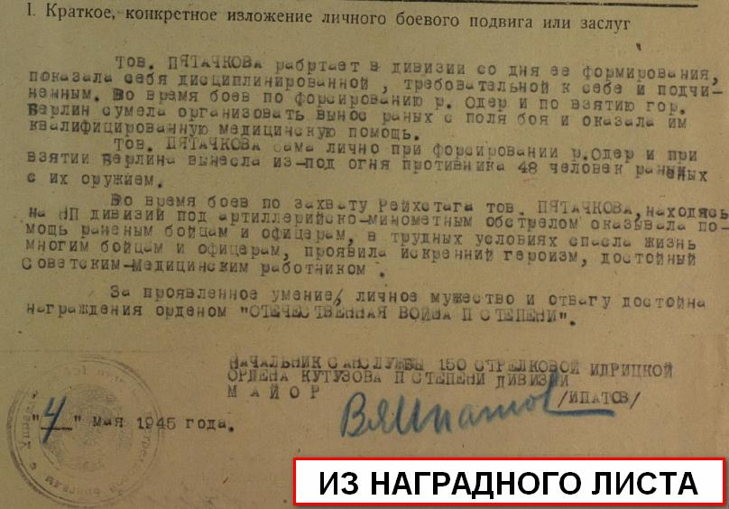
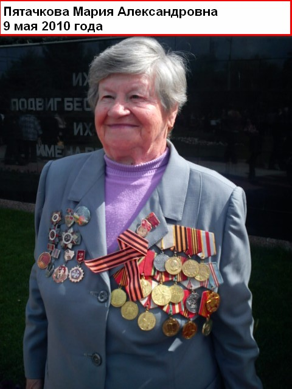

| Она не пропала без вести
В Фонд «Жить и Помнить» приходят десятки писем из разных регионов России, в которых нас просят исправить не корректные записи в Книге Памяти Тверской области.
В некоторых таких письмах нам сообщают о том, что бойцы и командиры Красной Армии, которые увековечены в книге Памяти как погибшие и пропавшие без вести на самом деле не погибли, и не пропала без вести, а вернулись с фронта, восстанавливали страну, растили детей и внуков, и умерли уже в преклонном возрасте.
На с. 435 шестого тома Книги Памяти (Кимрский район) есть такая запись: «Пятачкова Мария Александровна, род. 1926, д. Михалково. Медсестра. Пропала без вести, март1943».
Как выяснилось из письма ее родственника, это не соответствует действительности.
Мария Александровна ушла на фронт в 1941 г. добровольцем. Воевала в составе легендарной 150 стрелковой ордена Кутузова II степени Идрицкой дивизии. Воины этой дивизии 1 мая 1945 г. штурмом овладели рейхстагом и водрузили на нем одно из своих штурмовых знамен, которое все знают сегодня как Знамя Победы. Была дважды ранена. Награждена медалью За боевые заслуги и Орденом Отечественной войны II степени. Но самое примечательное в этой истории то, что старший сержант медицинской службы Пятачкова М.А. не пропала без вести. Вернувшись с фронта на месте своей подмосковной деревеньки, в которой жила перед войной, обнаружила пепелище, даже печек не осталось. Уехала в Таджикистан. Сейчас живет в г. Курганинск Краснодарского края. Она и сегодня в строю. Встречается с молодежью, рассказывает о том, как воевали и как победили. Очень гордится подарком командира дивизии генерала Шатилова В.М., который лично вручил ей свою книгу «Знамя над Рейхстагом» с дарственной надписью. |